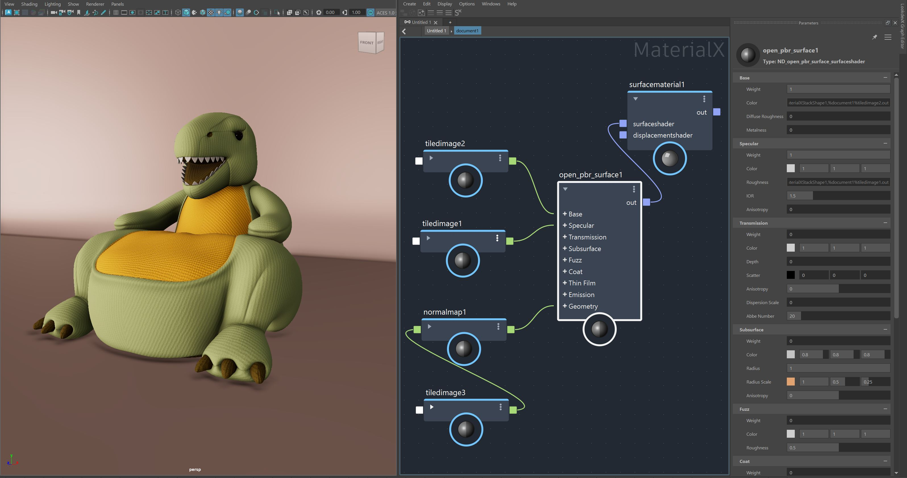

OpenPBR is now available in LookdevX! OpenPBR is an open-source shading model jointly developed by Autodesk and Adobe, it is designed as the successor to Autodesk Standard Surface and Adobe Standard Material, offering enhanced functionality and a more user-friendly experience while also enhancing interoperability of materials between different CG software.
To learn more about the OpenPBR Surface, visit the Academy Software Foundation's GIT page:
The OpenPBR surface can be found under the new OpenPBR menu in the Tab menu, or, in the Node Library under OpenPBR.
